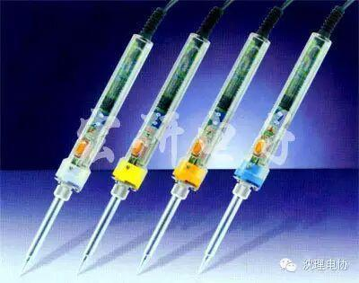

迎新倒计时
你们一直期待的迎新见面会终于要开始了，本周六晚6:30综合楼120与你们不见不散，欢迎广大大朋友小朋友们来参加，我们会让你感受到电协不一样的乐趣。


一、电烙铁
1、常用电烙铁的种类和功率
常用电烙铁分内热式和外热式2种。内热式电烙铁的烙铁头在电热丝的外面，这种电烙铁加热快且重量轻。外热式电烙铁的烙铁头是插在电热丝里面，它加热虽然较慢，但相对讲比较牢固。
电烙铁直接用220V交流电源加热。电源线和外壳之间应是绝缘的，电源线和外壳之间的电阻应是大于200M欧姆.
电子爱好者通常使用30W、35W、40W、45W、50W的烙铁。功率较大的电烙铁，其电热丝电阻较小。欧姆定律导出公式：R=U/I=U/I*U/U=U^2/P
2、烙铁使用的注意事项
（1）新买的烙铁在使用之前必须先给它蘸上一层锡（给烙铁通电，然后在烙铁加热到一定的时候就用锡条靠近烙铁头），使用久了的烙铁将烙铁头部锉亮，然后通电加热升温，并将烙铁头蘸上一点松香，待松香冒烟时在上锡，使在烙铁头表面先镀上一层锡。
（2）电烙铁通电后温度高达250摄氏度以上，不用时应放在烙铁架上，但较长时间不用时应切断电源，防止高温“烧死”烙铁头（被氧化）。要防止电烙铁烫坏其他元器件，尤其是电源线，若其绝缘层被烙铁烧坏而不注意便容易引发安全事故。
（3）不要把电烙铁猛力敲打，以免震断电烙铁内部电热丝或引线而产生故障。
（4）电烙铁使用一段时间后，可能在烙铁头部留有锡垢，在烙铁加热的条件下，我们可以用湿布轻檫。如有出现凹坑或氧化块，应用细纹锉刀修复或者直接更换烙铁头。
二、焊接技术
这里讲的焊接技术是指电子电路制作中常用的金属导体与焊锡之间的熔合。焊锡是用熔点约为183度的铅锡合金。市售焊锡常制成条状或丝状，有的焊锡还含有松香，使用起来更为方便。
1、握持电烙铁的方法
通常握持电烙铁的方法有握笔法和握拳法两种。
（1）、握笔法。适用于轻巧型的烙铁如30W的内热式。它的烙铁头是直的，头端锉成一个斜面或圆锥状的，适宜焊接面积较小的焊盘。
（2）、握拳法。适用于功率较大的烙铁，我们做电子制作的一般不使用大功率的烙铁（这里不介绍）。
2、在印刷电路板上焊接引线的几种方法。
印刷电路板分单面和双面2种。在它上面的通孔，一般是非金属化的，但为了使元器件焊接在电路板上更牢固可靠，现在电子产品的印刷电路板的通孔大都采取金属化。将引线焊接在普通单面板上的方法：
（1）、直通剪头。引线直接穿过通孔，焊接时使适量的熔化焊锡在焊盘上方均匀地包围沾锡的引线，形成一个圆锥体模样，待其冷却凝固后，把多余部分的引线剪去。（具体的方法见板书）
（2）、直接埋头。穿过通孔的引线只露出适当长度，熔化的焊锡把引线头埋在焊点里面。这种焊点近似半球形，虽然美观，但要特别注意防止虚焊。
3防止焊接不良
焊接技术是一项无线电爱好者必须掌握的基本技术，需要多多练习才能熟练掌握。
1、选用合适的焊锡，应选用焊接电子元件用的低熔点焊锡丝。
2、助焊剂，用25%的松香溶解在75%的酒精（重量比）中作为助焊剂。
3、电烙铁使用前要上锡，具体方法是：将电烙铁烧热，待刚刚能熔化焊锡时，涂上助焊剂，再用焊锡均匀地涂在烙铁头上，使烙铁头均匀的吃上一层锡。
4、焊接方法，把焊盘和元件的引脚用细砂纸打磨干净，涂上助焊剂。用烙铁头沾取适量焊锡，接触焊点，待焊点上的焊锡全部熔化并浸没元件引线头后，电烙铁头沿着元器件的引脚轻轻往上一挑，离开焊点。
5、焊接时间不宜过长，否则容易烫坏元件，必要时可用镊子夹住管脚帮助散热。
6、焊点应呈正弦波峰形状，表面应光亮圆滑，无锡刺，锡量适中。
关注沈理电协（微信：sylgdzxh）
每一次转发和分享都是对我们的肯定。